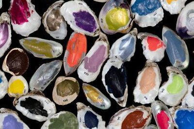

Partnerships and collaborations
Winsor & Newton X The Symposium
In celebration of International Colour Day, World Poetry Day and World Pigment Day, we're delighted to introduce Colour & Poetry: A Symposium IV. This cross- and inter-disciplinary three-day virtual event will be held by the Slade School of Fine Art and supported by Winsor & Newton. Join the event for an exciting host of presentations, readings, performance and practical workshops. You'll hear from a range of speakers representing the arts and humanities, science, and industry, drawing upon knowledge from within and outside of the UCL community.
Winsor & Newton X The Metropolitan Museum of Art
.jpg)
Delve into the fascinating world of painting conservation with insights from experts at New York's Metropolitan Museum of Art. Since 1832 Winsor & Newton has been providing the highest quality colours to the world’s finest artists. Our commitment to quality and innovation is just one part of our heritage. We are also dedicated to supporting art education and the preservation of fine art. As part of this commitment, Winsor & Newton is very proud to support painting conversation at The Metropolitan Museum of Art.
Winsor & Newton X The Drawing Factory
What happens when over 30 artists are asked to unleash their creativity in a former hotel in Paris? Watch our video and discover more to find out. This once-in-a-lifetime artist residency took place at The Drawing Factory in Paris’ vibrant 17th arrondissement, a largely residential area north of the Arc de Triomphe. Artists were invited to occupy five floors of rooms that were repurposed into art studios for six months..